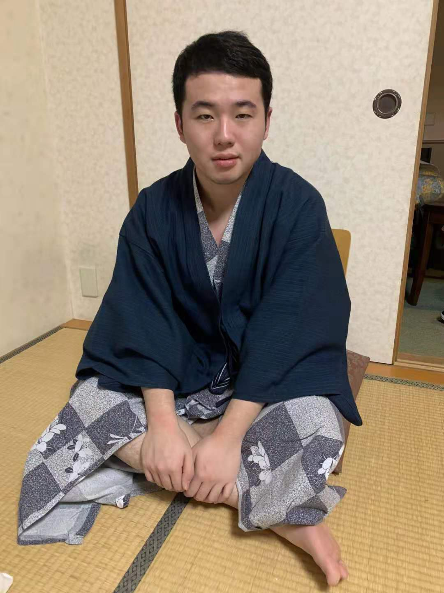
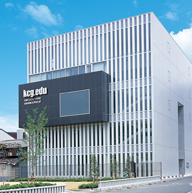
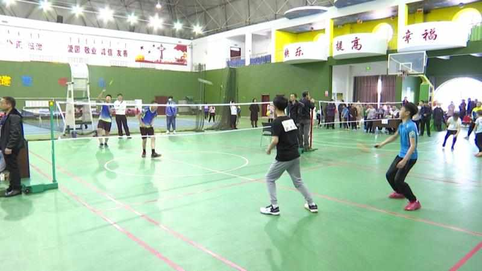

About me
“My name is Zhou Shuofeng. I am 24 years old and born in Beijing, China. Graduated from Changsha University of Science and Technology and now studying in Japan, I want to enrich my knowledge.”
My Country

Beijing is a beautiful city. There are many famous foods here, such as Peking duck, candied haws and so on. Beijing is also the capital of China, with 21.54 million people living here. At the same time, there are many people who come here to travel, to the Forbidden City, the Old Summer Palace and so on.
My School
My school is a very good school (Kyoto University of Information Science and Technology). It focuses on cultivating computer talents and has many excellent teachers. I have gained a lot from studying here.。
My Hobby
I like sports, playing games, and watching anime. My favorite game in the game is a game called DOTA2. If you also play, I would love to play with you. In terms of sports, I like to play badminton. It can help me exercise and make me enjoy the joy of sports. I like watching anime, which is one of the reasons why I came to Japan. My favorite anime is Naruto.